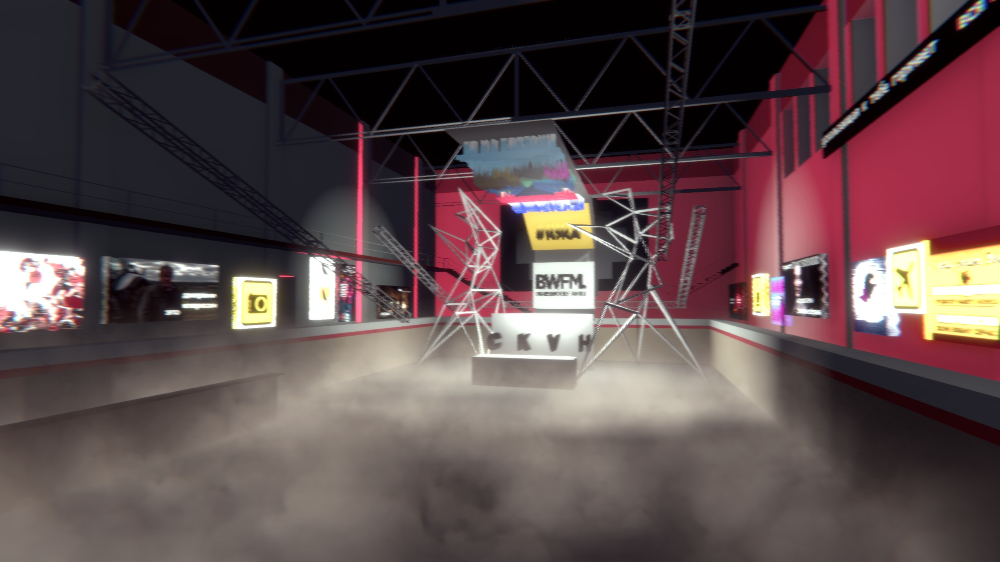
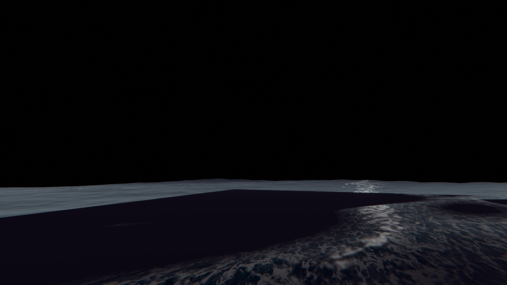
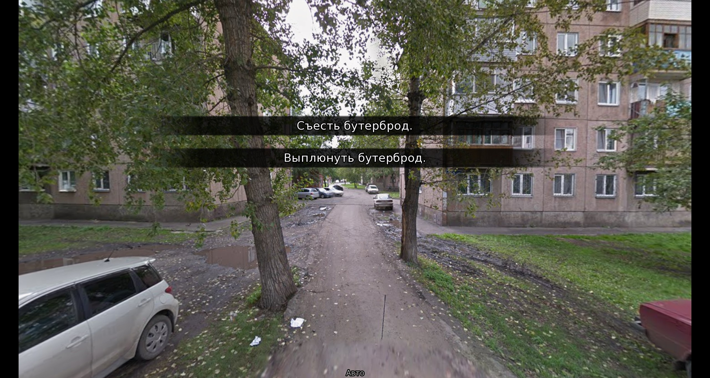
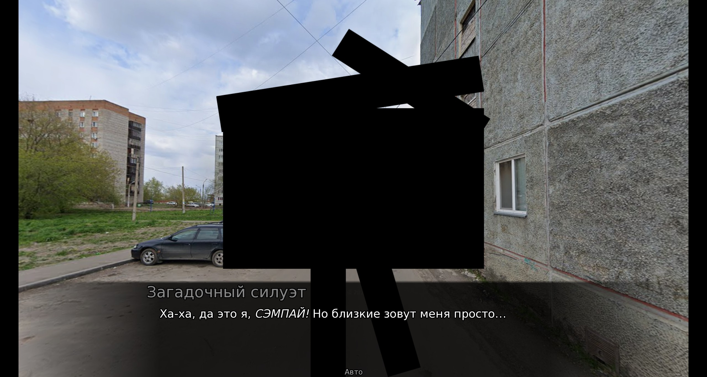

Digital Rescanning Practice — это «неигра», где рейв можно прожить в том же самом бассейне, но все движения становятся суперспособностями. Симулятор ходьбы превращается в физический театр — на рейве все двигают ногами, но никуда не идут, так же как и в бассейне, где люди активно плывут, но никуда не доплывают.
Механика осмысляется здесь философски и визуально — монотонные повторяющиеся движения показаны глитчем, взрыв эмоций через телепортацию, дезориентация — это гиперскачки вперед. Но куда здесь бежать? Яркие билборды, цифровая эстетика в лиминальном пространстве — всё как в жизни. А где вся вода — везде, кроме бассейна.
Управление
| Мышь | — | Поворот |
| ЛКМ | — | Телепорт |
| ПКМ | — | Рывок вперёд |
| Пробел | — | Прыжок и бег по стенам |
| W | — | Вперёд |
| A | — | Налево |
| S | — | Назад |
| D | — | Направо |
| C | — | Присед и подкат |
Для запуска необходимо разархивировать игру и нажать Digital Rescanning Practice.exe


Визуальная новелла – текстовая игра с картинками, правнучка текстовых квестов. Внутри жанра много разновидностей, самый популярный из которых – симулятор свиданий. Простой, эмпатичный, 18+.
Место привлекательного субъекта в этой игре занимает незаметный бассейн. Бассейн – часть города, в котором автор часто прогуливался в школьную пору. Игра основана на реальных фотографиях с гугл-карт местности около бассейна – окрестности Зеленой Рощи.
«Свидание с бассейном» – это абсурдная история о локальности как близости. К городским ландшафтам тоже можно испытывать самые тёплые чувства. Но готов ли ты любить бассейн без воды?
Для запуска необходимо разархивировать игру и нажать swimming_pool_date.exe